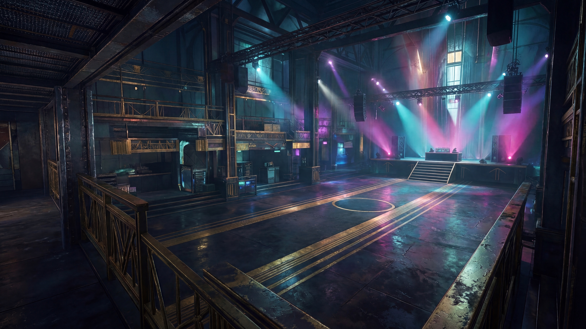
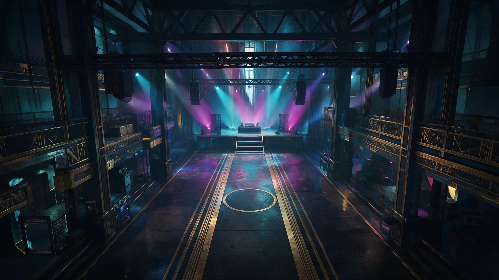
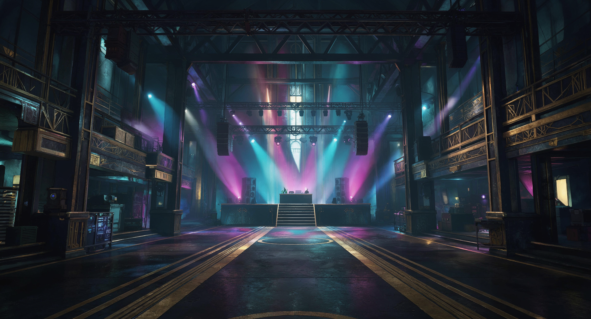
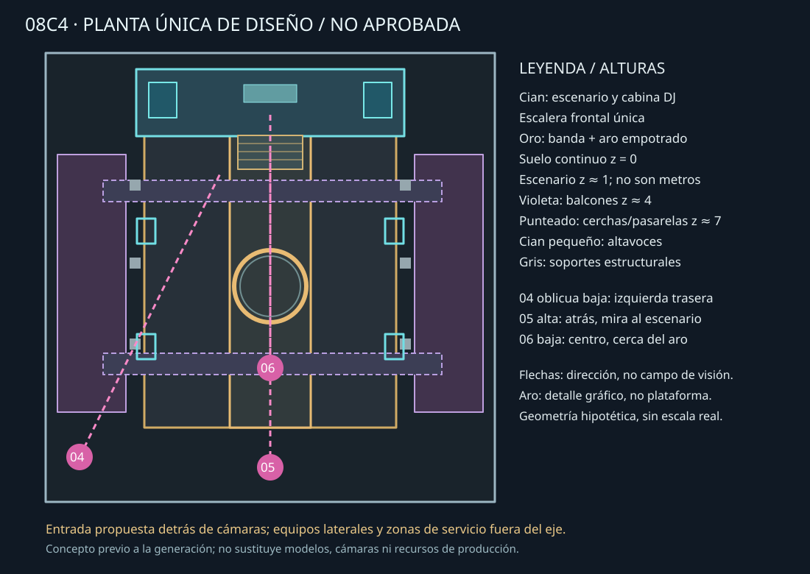

Propuestas, no finales ni aprobadas. Las imágenes están condicionadas por una planta común; no se renderizaron desde un modelo compartido y su continuidad geométrica no está demostrada.
Informe y limitaciones · Planta conceptual · Comparativa anterior 08C3




Escenario al fondo, escalera central, banda longitudinal y aro plano; balcones laterales, estructuras superiores y sonido. 04 presenta entrada oblicua, 05 una visión elevada y 06 una aproximación frontal más baja.
Las cerchas visibles no demuestran que todas sean pasarelas transitables. Las cantidades, colocación y tamaños de columnas, altavoces y luces requieren contraste; las diferencias no deben atribuirse automáticamente a perspectiva. El área central no se ha probado con sprites oficiales.
El aro propuesto es un motivo integrado en suelo, no una plataforma o mecanismo. No se han generado sprites, no se ha integrado ningún recurso ni se ha aprobado diseño alguno.